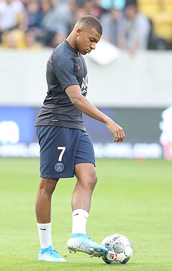

Kylian Mbappé, sinh ngày 20 tháng 12 năm 1998 tại Paris, là một cầu thủ bóng đá người Pháp thi đấu ở vị trí tiền đạo cho Paris - Saint-Germain. Được coi là một trong những cầu thủ xuất sắc nhất thế giới, anh ấy được công nhận về kỹ năng rê bóng, hiệu quả và tốc độ vượt trội của mình.

.Cậu đã được thông báo về cuộc viếng thăm này từ trước, do đó đã có sự chuẩn bị rất chu đáo. Cậu viết ra một số ý nghĩ của mình, với một cây bút màu xanh. Cậu rất sốt ruột muốn đọc chúng ngay, nhưng bà nội bảo cậu phải đợi. Cậu có thể làm điều đó sau, còn giờ thì chưa phải lúc. Ông bà của cậu và các vị khách mời đang tán gẫu và uống cà phê. Cậu nhìn lại cuốn sổ tay cậu đã đặt lên trên chiếc bàn trong một căn phòng nhỏ bị choán hết không gian bởi một chiếc ti vi lớn. Thi thoảng cậu lại chen ngang vào cuộc nói chuyện của người lớn. Rồi cuối cùng cũng được làm điều mình muốn, với một đề nghị: đọc to, phát âm các từ thật rõ ràng.
“Xin chào tất cả mọi người. Kylian là người tuyệt vời nhất. Anh ấy là người hùng của Bondy. Ai cũng yêu mến anh ấy. Anh ấy là hình mẫu cho mọi trẻ em chơi bóng đá. Anh ấy rất tốt bụng. Wilfrid và Fayza đã nuôi dạy các con mình rất tốt. Ethan chắc chắn sẽ theo bước anh trai, Kylian.”
Idrisse năm nay 9 tuổi. Ngoài thời gian ở trường, cậu bé chơi bóng cho đội U-10. Trong vài chục chữ, cậu bé đã có thể tóm lược được suy nghĩ của tất cả mọi người ở Bondy, từ Madame La Maire (Bà Thị trưởng - N.D), tới những đứa trẻ đang chơi bóng trên những sân bóng ở Stade Léo-Lagrange chỉ cách đó vài trăm mét.
Idrisse là cháu nội của Elmire và Pierrot Ricles. Hai vợ chồng họ di cư tới Pháp từ Martinique vào cuối những năm 1970. Họ sống ở tầng một của một tòa nhà màu trắng có địa chỉ tại số 4 Allée des Lilas. Đấy là một tòa nhà 5 tầng được xây dựng từ những năm 1950, nằm trên một con phố rợp bóng cây xanh ở trung tâm của Bondy, khu vực được một số người gọi phô trương là Cité de Fleurs (khu phố của các loài hoa) do cách đặt tên các con đường trong khu này. Chính ở đó, vào mùa thu năm 1998, gia đình Mbappé chuyển tới sinh sống. Ngay khi đặt chân lên bậc thang đầu tiên, bạn sẽ có thể nhìn thấy một hòm thư vẫn còn ghi “Lamari-Mbappé Lottin, Nhà thứ Hai bên Trái”. “Họ chuyển tới sống ở căn hộ ngay trên đầu chúng tôi,” Elmire nói, “Đó là một căn hộ gần giống như căn hộ của chúng tôi: cũng 56 mét vuông, có phòng khách, một căn bếp nhìn ra sân Stade Léo-Lagrange, và hai phòng ngủ. Tôi nhớ là khi họ tới, Fayza đang mang bầu Kylian những tháng cuối.”
Fayza - cô gái 24 tuổi có gốc gác Algeria - lớn lên ở Bondy Nord, trong khu Terre Saint Blaise. Cô học ở trường Jean Zay, và thường chơi thể thao ở nhà tập ngay đối diện nhà. Cô chơi bóng rổ cho tới năm 12, 13 tuổi, nhưng sau đó đã chuyển hẳn sang bóng ném. Cô thi đấu bên cánh phải của AS Bondy ở giải pision 1.
“Cô ấy có xuất phát điểm thấp, nhưng đã nhanh chóng vươn lên trở thành một trong những cầu thủ hay nhất của Bondy trong giai đoạn cuối những năm 1990. Fayza là người rất có sức hút. Cô ấy là một trong những thủ lĩnh trong đội, rất tài năng, cực kỳ mạnh mẽ,” một người bạn của gia đình kể.
“Trên sân, cô ấy là một chiến binh. Tuy nhiên, cô ấy cũng gặp vấn đề với cái đầu nóng của mình. Cô ấy rất dễ nổi khùng, và thường không thân thiện lắm với đối thủ. Đã chạm mặt Fayza rồi thì anh sẽ chẳng thể nào quên,” Jean-Louis Kimmoun, cựu giám đốc và chủ tịch của câu lạc bộ kể lại trong một cuộc trả lời phỏng vấn tờ nznLe Parisien. “Nhưng khi rời khỏi sân đấu thì cô ấy là một người rất ngọt ngào, và bây giờ vẫn vậy.”
“Cô ấy nói rất nhiều. Và rất hay làm trò trêu chọc người khác. Tôi làm việc chung với cô ấy trong khoảng ba hay bốn năm gì đó. Chúng tôi làm huấn luyện viên trong các trung tâm cộng đồng ở Maurice Petitjean và Blanqui vào các ngày thứ Tư và trong các kỳ nghỉ của trường. Đó là nơi cô ấy gặp gỡ Wilfrid, cũng là một huấn luyện viên, cùng em trai của anh ấy là Pierre và Alain Mboma - anh trai của Patrick Mboma, cầu thủ châu Phi xuất sắc nhất năm 2000. Cả hai đều yêu thể thao, thích làm trò, và đều có tính cách rất mạnh mẽ. Họ như thể được sinh ra là để dành cho nhau,” một người bạn chung nhận xét.
Khi chuyển tới Allée des Lilas với Fayza, Wilfrid đã 30 tuổi. Anh được sinh ra ở Douala, Cameroon, nhưng di cư tới Pháp để tìm kiếm một cuộc sống tốt đẹp hơn. Sau một thời gian sống ở Bobigny, anh chuyển tới Bondy Nord, và chơi bóng đá ở đó trong nhiều năm.
Theo Jean-François Suner, giám đốc kỹ thuật của AS Bondy, người vẫn được gọi bằng biệt danh Fanfan, thì “anh ấy là một cầu thủ giỏi, mẫu số 10, rất thích giữ bóng trong chân.” “Anh ấy hoàn toàn có thể theo đuổi một sự nghiệp chuyên nghiệp. Trưởng thành từ hệ thống đào tạo trẻ của câu lạc bộ, anh ấy sau đó đã chuyển sang chơi cho đội bóng của thành phố lân cận (Bobigny) ở giải pision d’Honneur trong 2 năm. Nghỉ ở đó, anh ấy lại quay về với chúng tôi. Chúng tôi mời anh ấy làm việc, và từ đó anh ấy đã cống hiến toàn bộ tâm huyết cho các cầu thủ trẻ, đầu tiên là với tư cách huấn luyện viên, sau đó là với tư cách giám đốc thể thao. Chúng tôi là đồng nghiệp trong suốt 30 năm, từ mùa 1988-89, và cùng với nhau, chúng tôi đã góp phần tái cơ cấu lại đội bóng. Anh ấy rời đội vào tháng 6/2017.”
20/12/1998
Hơn 5 tháng đã trôi qua kể từ khoảnh khắc “một hai ba - không!” nổi tiếng. Hai pha đánh đầu của Zinedine Zidane và cú chốt của Emmanuel Petit đã giúp đội tuyển Pháp vùi dập Brazil của “Người ngoài hành tinh” Ronaldo 3-0 trong trận chung kết World Cup 1998. Ký ức về ngày Chủ nhật 12/7 và màn phát cuồng tập thể hôm đó vẫn còn như mới. Ai mà có thể quên được cái cảnh một triệu rưỡi người ăn mừng như điên dại trên Đại lộ Champs Élysées, miệng không ngừng hát vang các bài ca chiến thắng chứ? Họ hát vang “Black-blanc-beur” (Đen-Trắng-Bắc Phi), rồi đồng loạt gào lên “Chức Tổng thống cho Zizou!” Ai mà có thể quên được một trong những thành tựu vĩ đại nhất trong lịch sử thể thao Pháp chứ? Quả thật là rất “hợp lý” khi trong cái năm bóng đá lên ngôi ấy, Fayza và Wilfrid cũng nhận được món quà Giáng sinh tuyệt vời nhất có thể: cậu con trai đầu lòng. Cậu bé chào đời vào ngày 20/12 và được đặt tên thánh Kylian Sanmi (viết tắt của Adesanmi, nghĩa là “chiếc vương miện vừa với tôi” trong tiếng Yoruba) Mbappé Lottin. Chính cái họ Mbappé là nguồn cơn của hàng nghìn suy đoán: Có phải Kylian là cháu của Samuel Mbappé Léppé, biệt danh “Le Maréchal”, tiền vệ người Cameroon nổi danh trong những năm 1950 và 60? Hay là họ hàng của Étienne M’Bappé, nghệ sĩ guitar bass cũng quê ở Douala? Câu trả lời là không, chẳng có mối liên hệ nào giữa Kylian với những người đó cả. Đơn giản vì, như Pierre Mbappé giải thích, ở Cameroon, họ Mbappé cũng phổ biến như Dupont ở Pháp hay Martin ở Anh.
Pierre là chú của Kylian. Ông cũng từng là một cầu thủ bóng đá. Ông được đào tạo ở Stade de l’Est trước khi gia nhập các câu lạc bộ như Levallois, Villemomble và Ivry.
Ngày Kylian chào đời, Pierre phóng như bay vào bệnh viện để thăm cháu, mang theo một trái bóng mini làm quà. Ông nói đùa với Fayza và anh trai Wilfrid: “Rồi anh chị xem, một ngày nào đó thằng bé sẽ trở thành một cầu thủ lớn!”
Sau ít ngày nằm viện, mẹ con Kylian được cho về nhà. Fayza trở lại làm việc ở Tòa Thị chính Bobigny, còn Wilfrid thì chỉ cần sang đường là có thể tới Stade Léo-Lagrange, nơi ông làm việc với tư cách huấn luyện viên cho các cầu thủ trẻ. Trong số các cậu bé mà Wilfrid đang đào tạo, ông đặc biệt chú ý tới một em. Cậu bé lúc đó 11 tuổi, chuyển tới Bondy 5 năm trước từ Kinshasa, lúc đó còn thuộc Zaire, nước Cộng hòa Dân chủ Congo. Tình hình ở Congo lúc đó rất khó khăn và phức tạp, nên bố mẹ cậu bé đã quyết định gửi cậu tới Pháp để cậu có cơ hội học hành và tạo dựng tương lai. Cậu bé tên là Jirès Kembo-Ekoko, con trai của Jean Kembo, người được biết tới với biệt danh “Monsieur But” (Ngài Bàn thắng).
Jean là tiền vệ của đội tuyển Zaire hai lần vô địch Cúp các quốc gia châu Phi vào các năm 1968 và 1974. Ông cũng là người ghi 2 bàn thắng vào lưới Morocco trong trận đấu diễn ra vào năm 1973, giúp Zaire trở thành đội bóng châu Phi vùng Cận Sahara đầu tiên giành quyền tham dự một kỳ World Cup (1974 ở Đức). Jean đặt tên con trai là Jirès để tỏ lòng ngưỡng mộ Alain Giresse, tiền vệ người Pháp mà ông hết sức thần tượng. Ở Pháp, Jirès sẽ sống cùng một ông chú và người chị gái của Jean. Vào năm 1999, Jirès Kembo-Ekoko lần đầu được đăng ký với tư cách cầu thủ của AS Bondy. Wilfrid là huấn luyện viên đầu tiên, và cũng rất nhanh chóng trở thành người bảo trợ, người cha của anh.
“Rất khó giải thích, nhưng đó là vấn đề bản năng, như thể ông ấy đã được định sẵn trong số mệnh của tôi vậy,” Jirès giãi bày, nhiều năm sau đó. Nhà Lamari-Mbappé Lottin đón Jirès về sống cùng; họ không nhận nuôi anh, nhưng anh thì luôn gọi họ là Mẹ và Bố, bởi vì chính họ là những người đã luôn yêu thương anh, giúp anh vượt qua những tình huống xã hội khó khăn và hoàn thành giấc mơ trở thành một cầu thủ chuyên nghiệp. Với nhóc Kylian, Jirès vừa là một người anh lớn, vừa là một hình mẫu, thần tượng, và người hùng bóng đá đầu tiên. Hàng xóm vẫn còn nhớ những lúc mà Jirès được về nghỉ cuối tuần trong thời gian còn tập luyện ở Học viện INF Clairefontaine, hay những lúc Fayza và Wilfrid chở anh tới các trận đấu quan trọng.
“Gia đình họ rất gần gũi và thân thiện,” Pierrot nhận xét. “Chúng tôi không gặp Wilfrid thường xuyên do đặc thù công việc của anh ấy nhưng chúng tôi đụng mặt Fayza suốt. Có thể là ở thang máy, cũng có thể là ở các cửa hàng trong khu. Chúng tôi cũng chứng kiến Kylian lớn lên từng ngày. Ngay khi vừa biết đi, cậu ấy đã bắt đầu tỏ ra thích thú với trò đá bóng quanh phòng. Vào các sáng Chủ nhật, tôi nghĩ là cậu ấy đã biến phòng của mình thành một sân bóng!” Elmire vừa cười vừa kể lại.
“Mỗi khi tôi gặp Fayza thì cô ấy đều xin lỗi rối rít. Tôi bảo cô ấy là không có vấn đề gì cả, bởi làm sao mà có thể ngăn được một đứa trẻ động chân động tay. Nhưng phải nói là ngay từ lúc ấy, ai cũng có thể dễ dàng nhận ra là trong đầu thằng bé chỉ có bóng đá và bóng đá thôi.”
Sau một tràng cười khác, bà Elmire lại kể chuyện khi gia đình bà tặng cho cậu nhóc tầng trên một chiếc trống djembe (trống hình cốc, có nguồn gốc từ Tây Phi - N.D) vào dịp Giáng sinh hay sinh nhật. “Nó vỗ không ngừng. Phải mất một thời gian dài thì nó mới quên được món đồ chơi mới của mình. Nhưng nói chung, nếu bỏ đi bóng đá và cái trống thì Kylian là một cậu bé đáng yêu, và rất lịch sự. Khi nào gặp tôi nó cũng chào Bonjour hay Bonsoir. Chúng tôi không có cơ hội dõi theo sự phát triển của cậu bé với tư cách một cầu thủ. Bởi chỉ ít năm sau khi Ethan ra đời, nếu tôi nhớ không nhầm thì là vào năm 2006, gia đình họ đã chuyển tới một khu dân cư khác ở phía nam của thành phố, ở phía kia của nhà ga, trên đường đi Les Coquetiers. Tới tháng 5 năm ngoái thì chúng tôi mới gặp lại Kylian khi cậu ấy trở lại sân bóng cũ để chia sẻ niềm vui đoạt chức vô địch Pháp. Mọi đứa trẻ ở AS Bondy đều có mặt ở đó. Chúng mang theo một biểu ngữ rất đáng yêu trên đó ghi: “Cảm ơn Kylian, người dân Bondy luôn ở phía sau anh!” Kylian tặng bọn trẻ rất nhiều áo. Idrisse thậm chí còn chen được tới gần Kylian để xin chụp ảnh cùng.
“Thực ra thì do may mắn thôi ạ,” Idrisse giải thích. “Cô Fayza nhìn thấy chúng cháu và hét lên: “Chờ đã, chờ đã, đấy là hàng xóm của chúng tôi!” Thế nên cháu mới có cơ hội chui vào trong chiếc xe van và chụp bức ảnh mà bây giờ mẹ cháu đang giữ rất cẩn thận.” “Nhân sự kiện ấy, chúng tôi và ba gia đình khác đang sống ở đây, với cả những hàng xóm ở tầng một là Daniel và Claudine Desramé, đã cùng nhau thảo một bức thư.”
Elmire đứng lên, rời khỏi bàn và tiến về một góc phòng. Bà mở một ngăn kéo, rồi lật từng tờ trong một chồng giấy cao. Cuối cùng bà reo lên: “Nó đây rồi!”
Kylian thân mến,
Hy vọng là cháu không cảm thấy sốc khi chúng tôi gọi cháu một cách thân mật như vậy. Chúng tôi vẫn nhớ rõ những ngày cháu còn là một cậu bé 10 tuổi ngoan ngoãn mà chúng tôi thường gặp trên cầu thang của tòa nhà số 4, phố Allée des Lilas. Giờ đây, cháu đã trở thành một ngôi sao bóng đá và tỏa sáng trên sân. Chúng tôi vẫn chăm chú dõi theo những thành công rực rỡ trong sự nghiệp thể thao của cháu. Chúng tôi thường nói chuyện với nhau về cháu, và về bố mẹ của cháu, những người mà chúng tôi rất yêu quý. Họ đã nuôi dạy cháu thật tuyệt vời. Mỗi lần cháu buộc dây giày, đừng quên rằng cháu đang có những fan lớn là các hàng xóm đấy nhé!
Chúc cháu những điều tốt đẹp nhất cho tương lai.